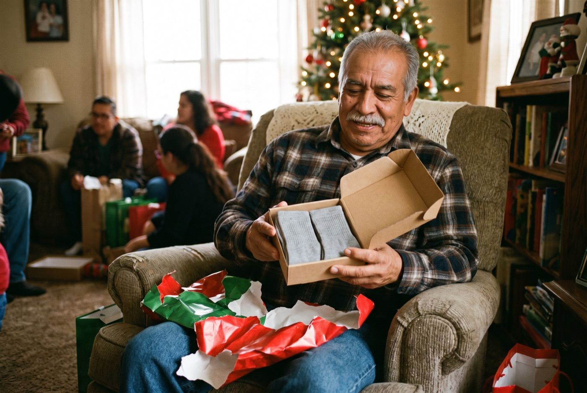
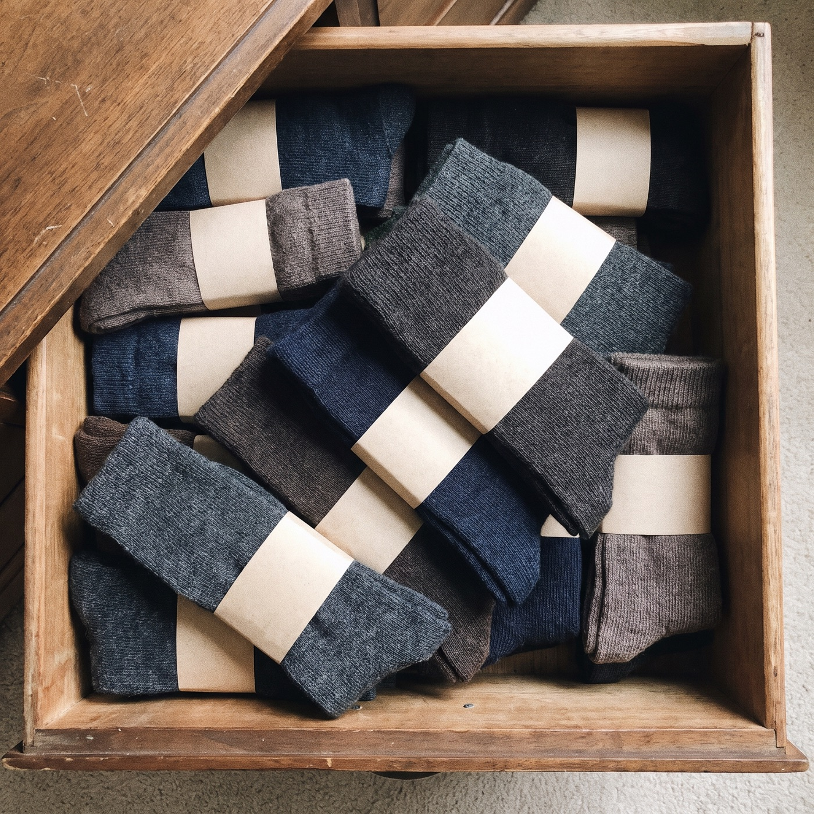
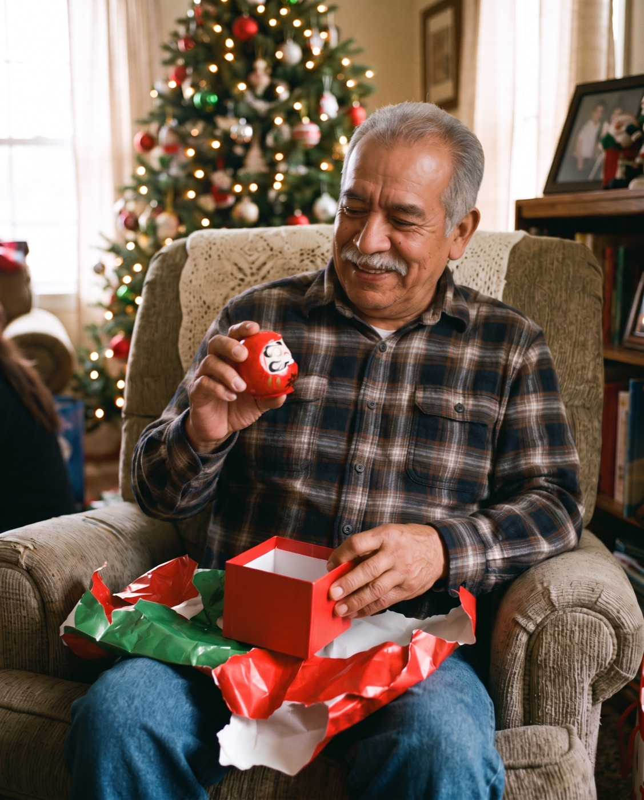
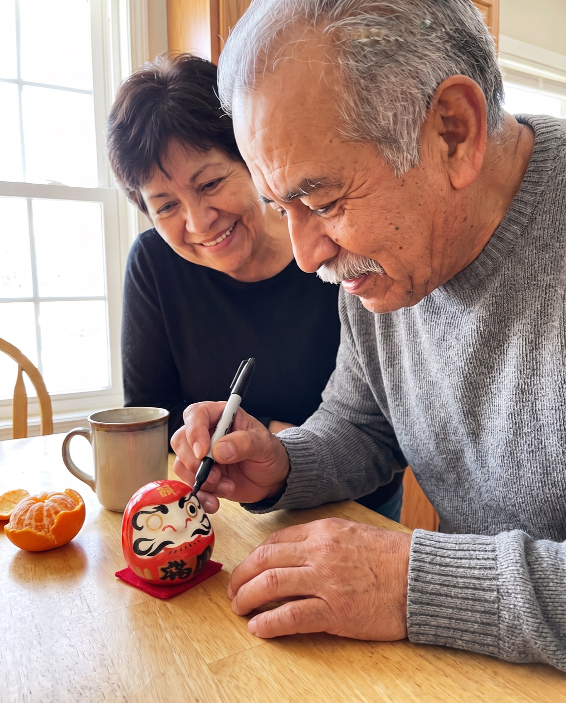
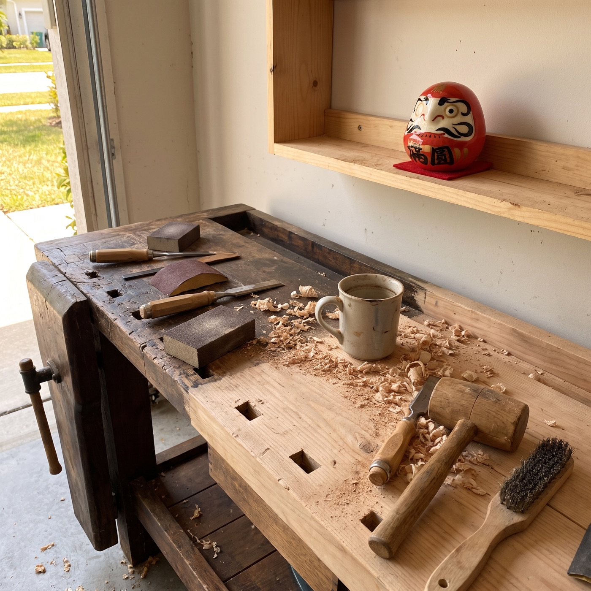

I tried it
I Gave My Dad Socks 11 Christmases in a Row. Here's What I Gave Him on the 12th.
An honest look at the gift I almost didn't buy, what it cost, and what happened when he opened it.
A story written by Daruma Ritual to show how the ritual is used. The customer messages quoted on this page are real.

My dad is the hardest person in the world to buy for.
Ask him what he wants and he says "nothing, mija." Ask my mom and she says "he likes socks." So for eleven Christmases in a row, that's what he got. Good socks. Wool ones, warm ones, ones with little anchors on them.
Last December I was putting laundry away in my parents' bedroom and opened his top drawer.

Most of them still had the paper band around them. He wasn't ungrateful. He just already had socks. He'd had socks since 1974.
I'd spent eleven years giving him something he didn't need, because I didn't know what else to give a man who says he wants nothing.
"Is this one of those gimmick gifts?"
That's honestly what I thought when a friend at work showed me hers: a small, round red doll on her desk with one eye painted in and one eye blank.
She told me it was a Daruma, a Japanese good-luck doll that's been part of New Year for around 400 years. You get it with both eyes blank. You pick one goal, paint the first eye, and keep it where you'll see it. You only paint the second eye when the goal is done.
My first reaction was the same as yours probably is. It's a cute ornament. Is it going to end up in the drawer with the socks?
So I did what I always do before I buy anything. I looked into it properly.
What I checked before buying one
- It arrives with both eyes blank, so the person receiving it does the ritual, not you
- Each colour has its own meaning: red is fortune and luck, green is health and strength, royal blue is ambition and career
- It's ceramic and weighted, so it rocks back up when it's knocked over (that's the whole symbolism: fall seven times, rise eight)
- It comes in its own illustrated gift box, so there's nothing to wrap
- No marker comes with it. Any black marker or brush pen works
- It's small: about 6.7 cm, roughly the size of a tangerine. Fine on a shelf, not a statement piece
The price was $33 for one, with free shipping. That's about what I'd been spending on the fancy socks.
Official Daruma Ritual store · Free tracked shipping worldwide · 30-day returns
Christmas morning, year twelve
I put the little red box under the tree with everyone else's presents. When he opened it, he turned the doll over in his hands like he was looking for the price tag.
"It doesn't have eyes," he said.
"That's your job," I told him. "You pick one thing you want to do this year. Paint one eye. When you've done it, you paint the other."

He went quiet for a minute. Then he said something I didn't expect: he'd been meaning to fix up my grandfather's old workbench in the garage for about ten years, and never got around to it.
That was his goal. Not a big one. But it was his.
New Year's Day
On January 1st he sat at the kitchen table with the black marker from the junk drawer and painted the first eye. He made my mom watch. He made me take a picture.

The Daruma lives on the shelf above that workbench now, one eye open, watching.
I'm not going to tell you a ceramic doll fixed a workbench. My dad did that, in his own time, on his own Saturdays. But for the first time in twelve years, I gave him something that asked him what he wanted, and then sat there and reminded him every time he walked into the garage.

My honest verdict
Worth it?
For the person who "wants nothing": yes. It's the only gift I've given my dad that started a conversation instead of ending one.
What I'd change: I'd buy a marker with it, and I'd order earlier. International post is slower in December, and the delivery estimate is shown at checkout.
What other customers wrote
Real messages the company has received, quoted word for word with initials only:
“I received my Daruma a few weeks ago and it has become a daily source of motivation for me. It reminds me to stay focused on my goals and to keep showing up. … Thank you for creating something so meaningful!”
“… I love the darumas and I would definitely buy more. I was able to gift the few as intended and keep one for myself.”
Choosing a colour
I went with red, the classic, for fortune and luck. My brother got my mom a pink one (love) and kept a royal blue one (ambition and career) for himself. You can mix colours in one order, and the more you get, the less each one costs:
Ceramic, 6.7 cm, 10 colours, each in its own gift box. From 8 Daruma, $20 each.
Official Daruma Ritual store · Free tracked shipping worldwide · 30-day returns
If you're buying for the whole family, there's also a 5-piece Premium Set: all five classic colours in a matte-black magnetic box, from $79. See the set.
This is for you if…
- They always say they "don't need anything"
- You want a small gift that means something
- You've run out of ideas after years of the same thing
Skip it if…
- You want something big to unwrap
- They'd rather not think about the year ahead
Questions I had
What size is it?
6.7 cm tall (about 2.6 in), ceramic, with a weighted base.
Which colour should I choose?
Red is the classic, for fortune and luck. Every colour has its own meaning, listed when you choose.
Is a pen or marker included?
No. Any black marker works for the eyes.
How does shipping work?
Free and tracked to every country. The estimate is shown at checkout.
What if it's not right?
You have 30 days after it arrives to request a return.
Official Daruma Ritual store · Free tracked shipping worldwide · 30-day returns